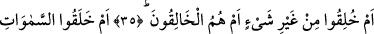
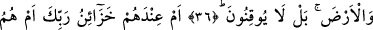
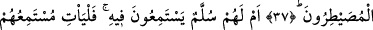
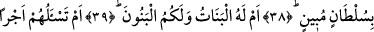
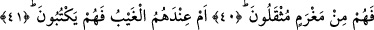
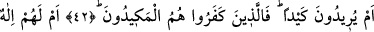
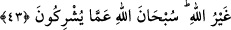

BİR TUZAK MI
KURMAK İSTİYORLAR?
35. Acaba onlar herhangi bir yaratıcı olmadan mı yaratıldılar? Yoksa kendileri mi
yaratıcıdırlar?
36. Yoksa gökleri ve yeri onlar mı yarattılar? Hayır! Onlar bir türlü anlayıp
inanmazlar.
37. Yahut Rabbinin hazineleri onların yanında mıdır? Ya da her şeye hâkim olan
kendileri midir?
38. Yoksa onların, üzerine çıkıp gizli sırları dinledikleri bir merdivenleri mi var?
Öyleyse dinleyenleri, açık bir delil getirsinler.
39. Yoksa kızlar O’nun, oğullar da sizin mi?
40. Yoksa sen kendilerinden bir ücret istiyorsun da, bu yüzden onlar ağır bir borç
altında eziliyorlar mı?
41. Yoksa gayba âid bilgiler kendi yanlarında da, onlar mı yazıyorlar?
42. Yahut bir tuzak mı kurmak istiyorlar? Asıl tuzağa düşecek olanlar, inkâr
edenlerdir.
43. Veya onların Allah’tan başka bir tanrısı mı var? Allah, onların ortak
koştukları şeylerden uzaktır.
“Acaba onlar herhangi bir yaratıcı olmadan mı yaratıldılar?” Yoksa onlar bu eşsiz
takdîre ve güzel şekle bir yaratıcı ve takdir edici olmaksızın kendi güçleri ve
yaratmalarıyla mı nâil oldular?! Bir kavle göre de mânâ: “Yoksa onlar herhangi bir
kullukta bulunma ve karşılığını alma olmamak üzere mi yaratıldığını zannederler?”
şeklindedir.
Kâşifî şöyle demiştir: Acaba onlar bir şey olmaksızın yâni annesiz ve babasız olarak